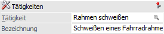
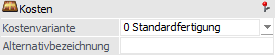
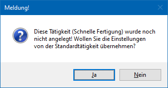
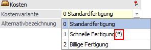
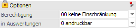
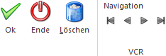

Tätigkeiten beschreiben einen Arbeitsschritt und alle dafür benötigten Ressourcen. Sie können daher auch als eine Art Zusammenfassung von Ressourcen beschrieben werden, wobei die Anlage über
1 WinLine PPS
1 Stammdaten
1 Tätigkeiten
stattfindet. Natürlich können auch mehrere Tätigkeiten innerhalb eines Arbeitsschritts hinterlegt werden (nähere Informationen entnehmen Sie bitte dem Kapitel Stückliste).
Achtung
Ressourcen, die in einer Tätigkeit zusammengefasst sind, werden im Fertigungsprozess gleichzeitig benötigt.

Zunächst können die Grundeinstellungen, unabhängig vom gewählten Register, definiert werden.
Tätigkeiten

Ø Tätigkeit
An dieser Stelle wird der Name der Tätigkeit (auch "Kurzcode" genannt) hinterlegt (20-stellige alphanumerische Eingabe).
Ø Bezeichnung
In diesem Feld kann eine kleine Beschreibung der Tätigkeit hinterlegt werden (maximal 40-stellig).
Achtung
Bei der Neuanlage einer Tätigkeit kann über das Feld "Bezeichnung" eine Tätigkeit verdoppelt (kopiert) werden. Hierfür wird die Taste F9 gedrückt und aus dem Tätigkeiten - Matchcode die gewünschte Tätigkeit ausgewählt.
Kosten

Ø Kostenvariante
Es können zu jeder Tätigkeit bis zu drei Kostenvarianten angelegt werden, d.h. die Tätigkeit kann unter maximal drei unterschiedlichen Gesichtspunkten angelegt werden, wobei alle Eingabefelder individuell pro Variante definiert werden können.
Die Texte der Kostenvarianten 1 und 2 stammen aus den PPS-Parametern (Bereich "Produktionsauftragsanlage"), können aber mit Hilfe des nachfolgenden Felds "Alternativbezeichnung" übersteuert werden.
Mit welcher Kostenvarianten gearbeitet werden soll kann bei der Produktionsauftragsanlage bzw. bei der Anlage eines Simulationsauftrags definiert werden, wobei eine Übersteuerung während des Einplanens pro Tätigkeit möglich ist. Sollte die gewählten Kostenvariante nicht angelegt worden sein, so wird automatisch mit "0 - Standardfertigung" gearbeitet.
Hinweis
Bei der Anwahl einer noch nicht angelegten Kostenvariante erscheint die folgende Abfrage:

Wird diese Meldung mit Ja bestätigt, werden die Einstellungen der Standardfertigungs-Variante in die neue Kostenvariante übernommen. Wenn Nein gewählt wird, werden keine Einstellungen der Standardfertigungs-Variante übernommen. Noch nicht angelegte Kostenvarianten werden wie folgt gekennzeichnet:

Ø Alternativbezeichnung
In diesem Feld kann eine tätigkeitsspezifische Bezeichnung für die aktuell selektierte Kostenvariante hinterlegt werden. Diese Bezeichnung wird im Fenster "Tätigkeiten einplanen" anstelle der globalen Bezeichnung aus den PPS-Parametern für die Kostenvariante dieser Tätigkeit angewendet.
Optionen (nur Register "Stamm")

Ø Berechtigung
Für jede Tätigkeit kann ein Berechtigungsprofil vergeben werden. Wenn der Anwender eine Tätigkeit aufruft, wird geprüft, ob der Anwender einer Benutzergruppe zugeordnet wurde, welche in dem jeweiligen Profil enthalten ist und ob somit eine Bearbeitung erlaubt wäre (nähere Informationen entnehmen Sie bitte dem WinLine ADMIN - Handbuch).
Hinweis
Benutzern des Typs "Administrator" oder mit der Administratorenberechtigung "Benutzeradministrator" steht in der Auswahlbox der Punkt ">> Neues Profil" zur Verfügung. Über die Anwahl dieses Eintrags kann in der Folge ein neues Berechtigungsprofil angelegt werden.
Ø in Auswertungen
In diversen Auswertungen (z.B. Tätigkeitenliste oder Arbeitsvorratsliste) kann definiert werden, ob alle oder nur andruckbare Tätigkeiten ausgegeben werden sollen. Die Auswahl "in Auswertung" in den Stammdaten ist das hierfür passende Gegenstück.
Neben diese Grundeinstellungen ist der Tätigkeitenstamm ist in mehrere Register unterteilt, welche in den nachfolgenden Kapiteln detailliert beschrieben werden:
ü Register "Optimale Auslastung"
Buttons

Ø Ok
Durch Anwahl des Buttons "Ok" bzw. der Taste F5 werden die Änderungen gespeichert.
Ø Ende
Mit Hilfe des Buttons "Ende" bzw. der Taste ESC wird der Programmbereich verlassen und alle nicht gespeicherten Änderungen verworfen.
Ø Löschen
Durch Drücken des Buttons "Löschen" kann nach einer Sicherheitsabfrage die Tätigkeit gelöscht werden.
Achtung
Ein Löschen der Tätigkeit sollte Grundsätzlich überdachte werden, wenn diese noch in Benutzung ist. Hierauf weist die WinLine entsprechend hin:
ü Ist die zu löschende Tätigkeit als Folgetätigkeit in einer anderen Tätigkeit hinterlegt, so erscheint eine entsprechende Meldung und das Löschen kann fortgesetzt werden.
ü Ist die zu löschende Tätigkeit in einer Stückliste hinterlegt, so erscheint eine entsprechende Meldung und das Löschen kann fortgesetzt werden.
ü Sobald die zu löschende Tätigkeit
in einem Produktionsauftrag verwendet wurde bzw. wird, ist ein Löschen nicht
möglich.
Soll die Tätigkeit trotzdem gelöscht werden, dann müssen zuvor alle
Produktionsaufträge, in welchen diese Tätigkeit vorkommt, gelöscht werden (auch
die erledigten Produktionsaufträge).
Ø VCR-Buttons
Über die so genannten VCR-Buttons kann durch Mausklick zwischen den einzelnen Stammdatensätzen (Tätigkeiten) geblättert werden.
ü  Damit kann die erste Tätigkeit angesprochen werden.
Damit kann die erste Tätigkeit angesprochen werden.
ü  Damit kann die vorherige Tätigkeit angesprochen werden.
Damit kann die vorherige Tätigkeit angesprochen werden.
ü  Damit kann die nächste Tätigkeit angesprochen werden.
Damit kann die nächste Tätigkeit angesprochen werden.
ü  Damit kann die letzte Tätigkeit angesprochen werden.
Damit kann die letzte Tätigkeit angesprochen werden.